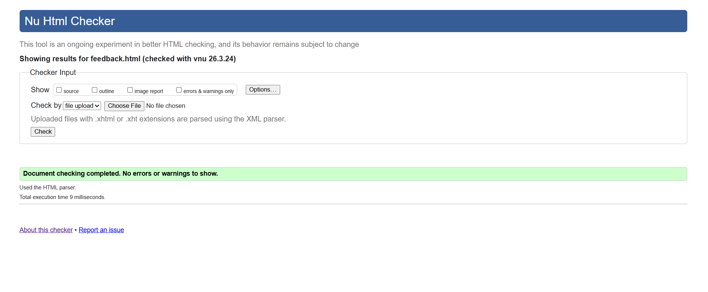
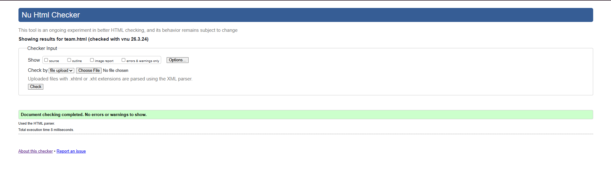
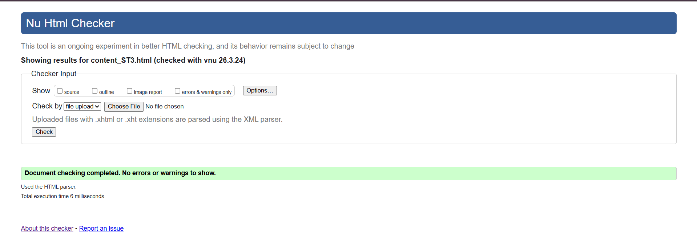

feedback.html – Validation Report
Include a short reflection on the validation report for the pages you implemented

Back to Page Editor
team.html – Validation Report
Include a short reflection on the validation report for the pages you implemented.

Back to Page Editor
content_ST3.html – Validation Report
Include a short reflection on the validation report for the pages you implemented.
